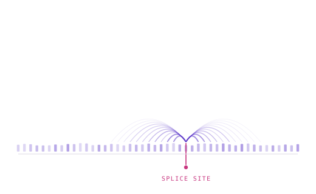
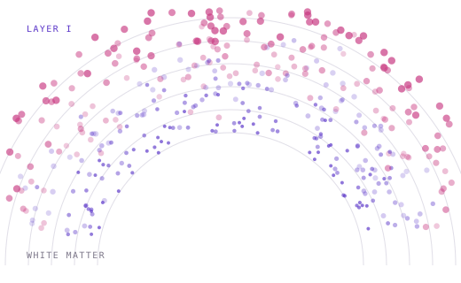
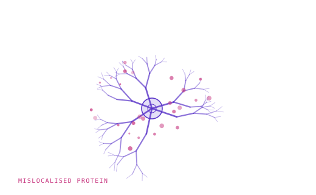

The genetic code of RNA regulation
How does DNA sequence specify RNA diversity and function?
Our research focuses on decoding the regulatory language of DNA and RNA — how sequence specifies molecular diversity across cells and tissue space — and on turning that code into nucleic acid medicines for ALS and other neurodegenerative diseases.
Which RNAs a cell makes, and what they do, is set by the genome and the proteome acting together. That control erodes with age, and its failure drives neurodegeneration. Reading this code is therefore a basic question, and translating it into medicine is a clinical question at the same time.

How does DNA sequence specify RNA diversity and function?
How do RNA-binding proteins shape RNA diversity and function?
How do RNA–protein interactions drive key biological processes, and how does their dysfunction drive disease? TDP-43 is our worked example.
Can models learn the nucleic acid code well enough to predict RNA function and interpret the grammar underlying it — and then to design nucleic acid drugs?
Each stage feeds the next, and results from the last stage send us back to the first.

Stage 01 / Profile and modelMulti-omic profiling of human samples and cell-based sequencing data supplies the training signal for AI models that predict and interpret RNA function — splicing in particular.

Stage 02 / Interpret and nominateThose models are turned on patient-level genomic data to find the variants that matter and nominate disease targets, resolved where possible to cell type and tissue position.

Stage 03 / Validate and designCell lines, iPSC-derived neurons and animal models validate the nominated targets and carry the surviving ones into drug design and development, above all in ALS.
Current effort concentrates on frontier AI models for RNA biology, genomics and spatial omics, and on translating those technologies and findings into drug discovery for ALS and other neurodegenerative disease.
One output of the first stage. Built on the Segment-NT architecture and fine-tuned on paired genome and transcriptome data, with twelve of the eighteen tissues drawn from the central nervous system. Give it a VCF; it returns tissue-specific changes in acceptor and donor usage.
The lab collaborates with the neurology departments of several tertiary hospitals in Shanghai, including Huashan Hospital, and maintains a close partnership with the Tanz Centre for Research in Neurodegenerative Diseases at the University of Toronto.
Computation runs on an in-house cluster with multiple A100 GPUs and more than 300 CPU cores.